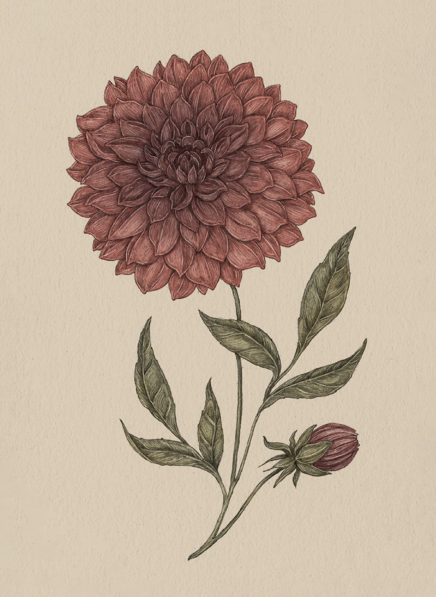

The Language of Flowers
Dahlia

Dahlia
Dahlia
Meaning
- Eternal love
- Commitment
Origin
The dahlia flower is often called the "Queen of the Autumn Garden" because it blooms for an extended
period of time, living well into the fall months. Frequently used in wedding bouquets during the
Victorian era, the flower symbolized longevity and commitment.
Pair With
- Tulip for a newly engaged couple
- Myrtle to show love and devotion